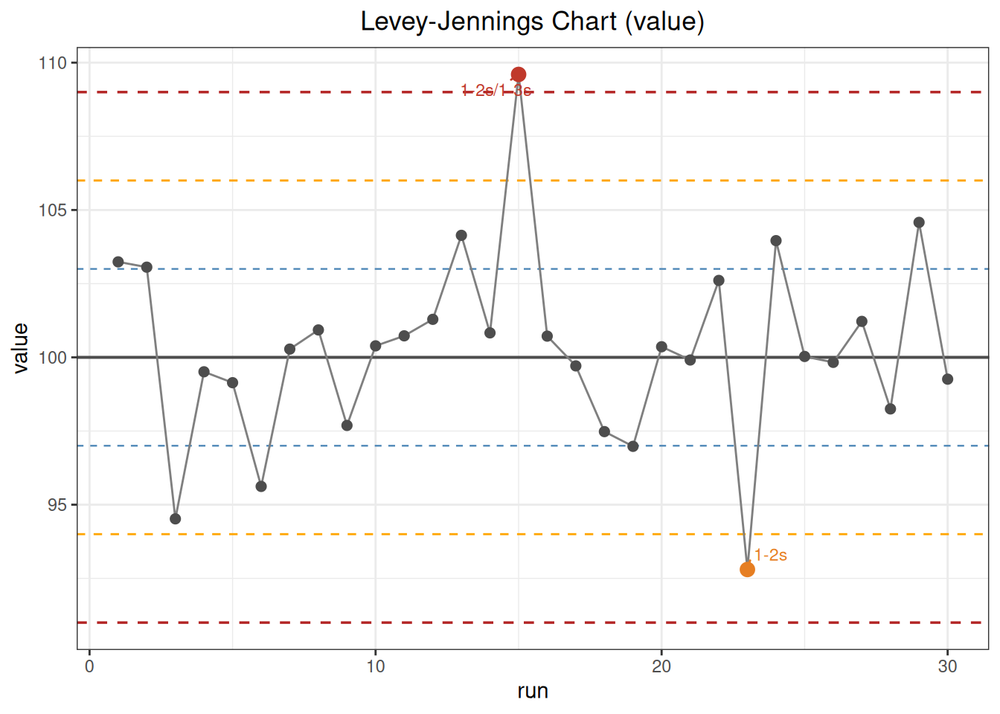
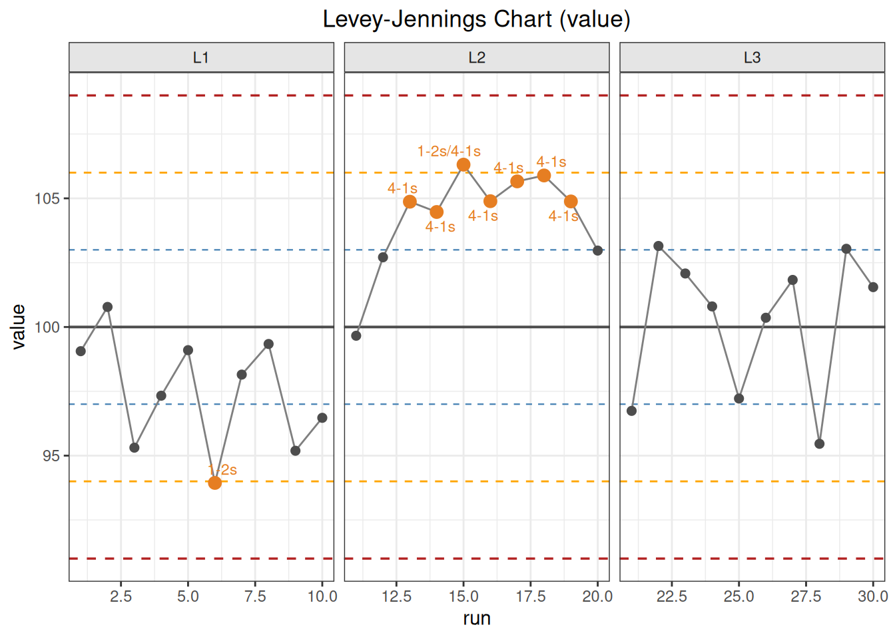

%%{init: {"theme":"base","themeVariables":{"primaryColor":"#EAF2FB","primaryBorderColor":"#2780E3","primaryTextColor":"#212529","lineColor":"#6C757D","secondaryColor":"#EAF7E6","tertiaryColor":"#FFF4E8","fontSize":"13px"},"flowchart":{"nodeSpacing":18,"rankSpacing":24,"padding":6}}}%%
flowchart LR
A["Approved targets, SD, and rules"] --> B["Order single-level QC by actual run sequence"]
B --> C["qc_chart()"]
C --> D["Violation positions by rule"]
C --> E["Levey--Jennings chart"]
F["Two QC levels from the same run"] --> G["youden_plot()"]
G --> H["Joint shift and ±2SD rectangle"]
D --> I["Investigation, correction, verification, and release record"]
E --> I
H --> I
classDef input fill:#EAF2FB,stroke:#2780E3,color:#212529
classDef process fill:#EAF7E6,stroke:#3FB618,color:#212529
classDef output fill:#F4EEFB,stroke:#9954BB,color:#212529
class A,F input
class B,C,G process
class D,E,H,I output
10 Quality Control
This chapter demonstrates how to use ivdtools to monitor continuous quality-control results. Current functionality includes listing implemented Westgard rules, creating a Levey–Jennings chart and locating rule violations, and using a Youden plot to inspect two QC levels jointly.
ImportantScope of Use
The routine QC, lot-change labels, and Youden data in this chapter are deterministic teaching data. They are not original standard data from CLSI EP23, EP26, or EP33 and are not intended to establish general acceptance criteria.
qc_chart() analyzes one numeric sequence at a time. Rules are scanned in the current row order of the data frame; run supplies only the x-axis for the plot and does not sort the data. group is used only for faceting and does not reset continuous rules between groups. The current severity labels mark only 1-3s as out_of_control; all other rule violations are labeled warning. Thus n_warn and n_oc are software display categories and are not equivalent to a laboratory multirule release strategy.
The statistical unit and workflow for QC analysis are:
Code
library(ivdtools)
library(readr)10.1 Main Functions
| Function | Main purpose | Main results |
|---|---|---|
list_westgard() |
View rule names recognized by qc_chart() |
Named vector of rule descriptions |
qc_chart() |
Standardize one QC sequence, scan rules, and create a Levey–Jennings chart | Targets, SD, positions by rule, unique violation points, and plotting data |
print() |
Print a summary of a QC or Youden object | Targets, sample size, rules, or outside-rectangle positions |
plot() |
Plot a result object | Levey–Jennings or Youden plot |
youden_plot() |
Jointly inspect two QC levels from the same run | Pearson correlation, positions outside the ±2SD rectangle, and plotting data |
10.1.1 View Rules with list_westgard()
Usage
Code
list_westgard()
Westgard QC Rules
--------------------------------------------------
1-2s 1 point exceeds +/-2s (warning)
1-3s 1 point exceeds +/-3s (out of control)
2-2s 2 consecutive points exceed +/-2s (same side)
R-4s 2 consecutive points differ by at least 4s
4-1s 4 consecutive points exceed +/-1s (same side)
8x 8 consecutive points on same side of mean
10x 10 consecutive points on same side of mean
-------------------------------------------------- Exact definitions in the current source code
Let the target mean be \(μ_0\) and the target standard deviation be \(σ_0>0\). The standardized deviation of result \(i\) is
\[ z_i=\frac{x_i-μ_0}{σ_0}. \]
| Rule | ivdtools condition |
Points marked |
|---|---|---|
1-2s |
\(|z_i|>2\) | Current point |
1-3s |
\(|z_i|>3\) | Current point |
2-2s |
Both adjacent points are \(>2\), or both are \(<-2\) | The two points in the adjacent window |
R-4s |
Each adjacent point has \(|z|\ge2\) and \(|z_i-z_{i+1}|\ge4\) | The two points in the adjacent window |
4-1s |
Four consecutive points are all \(>1\), or all \(<-1\) | The four points in the window |
8x |
Eight consecutive points are all \(>0\), or all \(<0\) | The eight points in the window |
10x |
Ten consecutive points are all \(>0\), or all \(<0\) | The ten points in the window |
Interpret inequality boundaries exactly as shown: 1-2s, 1-3s, 2-2s, and 4-1s use strict “greater than”; a point exactly at \(2s\), $3s, or $1s does not trigger the rule. The single-point threshold and two-point range for R-4s use “greater than or equal to.” A point may occur in several rules; n_violations counts unique positions across all rules.
WarningBoundary of Multilevel Westgard Rules
Classical multirule schemes can combine rules across QC levels in the same run or across consecutive runs at the same level. The current qc_chart() scans only the vector supplied to it; R-4s and the other window rules are implemented over adjacent rows, and the function does not automatically recognize two levels from the same run. Multilevel data must not simply be stacked into one column and treated as a standard multilevel Westgard decision. youden_plot() can help inspect two levels, but it does not apply cross-level Westgard rejection rules.
10.1.2 Single-Sequence Control Chart with qc_chart()
Usage
Code
qc_chart(
data,
value,
rules = "1-2s,1-3s,2-2s,R-4s,4-1s,10x",
mean = NULL,
sd = NULL,
group = NULL,
run = NULL
)
print(x)
plot(x)Arguments
| Argument | Description |
|---|---|
data |
Data frame; each row is one QC result in the sequence. |
value |
Name of the numeric QC result column. |
rules |
Comma-separated string; only names listed by list_westgard() are allowed. 8x is not included by default. |
mean |
Target mean; if NULL, estimated from the current complete data. Routine monitoring should normally pass an approved target explicitly. |
sd |
Positive target SD; if NULL, estimated from the current complete data. |
group |
Optional grouping column used only for plot facets; targets are not estimated separately and rule windows are not reset. |
run |
Optional x-axis column; if NULL, uses \(1,\ldots,n\). It does not change scan order. |
If different control materials, lots, or instruments need their own targets and independent rule resets, first split the data into a named list with split_by_factors(data, variable="..."), then call qc_chart() separately for each data frame. A group facet cannot replace independent analyses.
Calculations and returned values
Rows with missing value are removed before calculation; corresponding complete rows of run and group are retained. If targets are not supplied, the sample mean and sample SD of all complete results are used:
\[ \hat\mu=\frac1n\sum_i x_i,\qquad \hat\sigma=\sqrt{\frac{\sum_i(x_i-\hat\mu)^2}{n-1}}. \]
Estimating targets from the same monitoring sequence can absorb an ongoing shift and widen the control limits. It is therefore suitable only for exploratory or establishment phases and should not be re-estimated on a rolling basis for each routine decision.
Main returned fields are:
| Field | Meaning |
|---|---|
target_mean, target_sd |
Targets actually used for standardization and control limits |
rule_vec |
Rules actually scanned and their order |
violations |
Named list; each element contains positions in the sequence after missing rows are removed |
n_violations |
Number of unique positions hit by any rule |
n_warn |
Number of unique points hit but not by 1-3s |
n_oc |
Number of unique points hit by 1-3s |
plot_data |
Complete values, x-axis, group, displayed severity, and rule labels |
n_total, n_complete, n_miss |
Original, complete, and missing record counts |
plot() draws the target mean and the \(±1s\), \(±2s\), and \(±3s\) lines and labels points hit by rules. Positions in violations refer to the cleaned sequence and may not equal original data-frame row numbers; when missing values occur, trace records through plot_data$run or the original run identifier.
10.1.3 Two-Level Joint Plot with youden_plot()
Usage
Code
youden_plot(
data,
sample1,
sample2,
mean1 = NULL,
mean2 = NULL,
sd1 = NULL,
sd2 = NULL
)
print(x)
plot(x)Arguments
| Argument | Description |
|---|---|
data |
Wide-format data frame; each row must represent two levels from the same run. |
sample1, sample2 |
Names of the two numeric QC-level columns. |
mean1, mean2 |
Target means; if omitted, estimated from complete paired data. |
sd1, sd2 |
Positive target SDs; if omitted, estimated from complete paired data. |
Only rows with both levels nonmissing are retained. Standardized coordinates are
\[ z_{1i}=\frac{x_{1i}-\mu_1}{\sigma_1},\qquad z_{2i}=\frac{x_{2i}-\mu_2}{\sigma_2}. \]
The source code defines a point as inside the rectangle when
\[ \lvert z_{1i}\rvert\le2 \quad\text{and}\quad \lvert z_{2i}\rvert\le2. \]
If either level strictly exceeds \(±2s\), the point is included in outside_rows. Boundary points remain inside. The object also calculates the Pearson correlation between the two original result columns:
\[ r=\frac{\sum_i(x_{1i}-\bar x_1)(x_{2i}-\bar x_2)} {\sqrt{\sum_i(x_{1i}-\bar x_1)^2\sum_i(x_{2i}-\bar x_2)^2}}. \]
Main fields include mean1, mean2, sd1, sd2, correlation, n_outside, outside_rows, and plot_data. outside_rows contains original data-frame row numbers, unlike the cleaned positions returned by qc_chart().
The current plot displays both levels on their original measurement scales and overlays \(±1s\) and \(±2s\) rectangles. To determine whether the two levels shifted in the same direction, compare the directions of \((z_1,z_2)\) relative to the center. Do not interpret an original-scale \(y=x\) reference line, with different targets or units, as meaning that the two levels should have equal numerical values. correlation and the outside-rectangle flag are descriptive results; there is no error ellipse, joint probability test, or automatic out-of-control conclusion.
Return value
youden_plot() returns two-level coordinates, ellipse/limit data, and outlier classifications, and invisibly returns a ggplot object.
10.2 Analysis Examples
10.2.1 Routine QC with Known Targets
Read 30 teaching results ordered by run:
Code
qc_daily <- read_csv(
"./data/010-质量控制/qc-daily.csv",
show_col_types = FALSE
)
qc_daily <- as.data.frame(qc_daily)
dim(qc_daily)[1] 30 2Code
head(qc_daily) run value
1 1 103.24
2 2 103.06
3 3 94.52
4 4 99.51
5 5 99.14
6 6 95.62The protocol specifies a target mean of 100 and target SD of 3, so pass them explicitly rather than re-estimating them from the monitoring data:
Code
qc_daily_fit <- qc_chart(
qc_daily,
value = "value",
rules = "1-2s,1-3s,2-2s,R-4s,4-1s,10x",
mean = 100,
sd = 3,
run = "run"
)
print(qc_daily_fit)
QC Control Chart
Value column: value
Mean (target): 100.0000
SD (target): 3.0000
N (total): 30 | Complete: 30 | Missing: 0
Rules applied: 1-2s, 1-3s, 2-2s, R-4s, 4-1s, 10x
Violations:
--------------------------------------------------
1-2s : points 15, 23
1-3s : points 15
-> 2 violation(s): 1 warning(s), 1 out of controlPoint 15 meets both 1-2s and 1-3s and is counted as one out_of_control point; point 23 meets only 1-2s and is counted as one warning point. Therefore n_violations=2, n_warn=1, and n_oc=1.
Code
plot(qc_daily_fit)
10.2.1.1 Known Targets versus In-Data Estimates
If mean and sd are omitted, the function re-estimates the center and dispersion from these 30 results:
Code
qc_daily_estimated <- qc_chart(
qc_daily,
value = "value",
run = "run"
)
qc_daily_estimated
QC Control Chart
Value column: value
Mean (target): 100.2890
SD (target): 3.2314
N (total): 30 | Complete: 30 | Missing: 0
Rules applied: 1-2s, 1-3s, 2-2s, R-4s, 4-1s, 10x
Violations:
--------------------------------------------------
1-2s : points 15, 23
-> 2 violation(s): 2 warning(s), 0 out of controlThe in-data estimates are a mean of 100.2890 and an SD of 3.2314. Point 15 no longer strictly exceeds the new \(+3s\) limit, so its display classification changes from out_of_control to warning. This is why routine monitoring should not update targets and SDs on a rolling basis using the current lot’s data.
10.2.2 Continuous Display with Lot-Change Labels
The first, middle, and last 10 points of this teaching data are labeled L1, L2, and L3, respectively; L2 has an artificial overall shift:
Code
qc_lot <- read_csv(
"./data/010-质量控制/qc-lot-change.csv",
show_col_types = FALSE
)
qc_lot <- as.data.frame(qc_lot)Code
qc_lot_fit <- qc_chart(
qc_lot,
value = "value",
mean = 100,
sd = 3,
run = "run",
group = "lot"
)
print(qc_lot_fit)
QC Control Chart
Value column: value
Mean (target): 100.0000
SD (target): 3.0000
N (total): 30 | Complete: 30 | Missing: 0
Rules applied: 1-2s, 1-3s, 2-2s, R-4s, 4-1s, 10x
Violations:
--------------------------------------------------
1-2s : points 6, 15
4-1s : points 13-19
-> 8 violation(s): 8 warning(s), 0 out of control1-2s hits points 6 and 15; several overlapping 4-1s windows mark points 13–19. After combining the two rule types, there are 8 unique points, all classified as warning by the current severity implementation. Rule windows are scanned continuously across L1/L2/L3 boundaries; plot facets do not change these positions.
Code
plot(qc_lot_fit)
10.2.3 Two-Level Youden Plot
Each row contains two QC levels from the same run:
Code
youden_data <- read_csv(
"./data/010-质量控制/qc-youden.csv",
show_col_types = FALSE
)
youden_data <- as.data.frame(youden_data)
head(youden_data) run low high
1 1 77.86 209.36
2 2 82.19 207.10
3 3 75.50 189.00
4 4 80.40 195.36
5 5 80.64 198.23
6 6 78.22 200.14Code
youden_fit <- youden_plot(
youden_data,
sample1 = "low",
sample2 = "high",
mean1 = 80,
mean2 = 200,
sd1 = 2,
sd2 = 5
)
print(youden_fit)
Youden Plot
Sample 1 (low):
Mean: 80.0000
SD: 2.0000
Sample 2 (high):
Mean: 200.0000
SD: 5.0000
Correlation: 0.5428
N (total): 30 | Complete: 30 | Missing: 0
Points outside +/-2SD: 3 (rows: 3, 17, 19)The Pearson correlation in this example is 0.5428; original rows 3, 17, and 19 lie outside the \(±2s\) rectangle. Correlation does not determine whether a process is out of control, and an outside-rectangle flag is only a localization aid. Use each run’s two standardized deviations together with single-level control charts, instrument events, and QC records to distinguish a shared systematic shift from a problem affecting one level alone.
Code
plot(youden_fit)